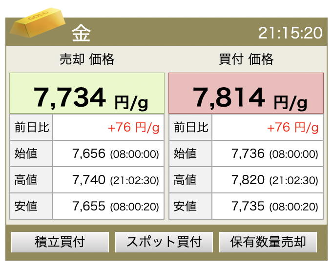

ロバートキヨサキが「2023年に金（ゴールド）は2倍に値上がりする」と予想した理由とは？
2022-12-31 by 内田裕之
- 「金が2023年に2倍に値上がりするって本当？」
- 「どうやって投資したらいいの？」
この記事はそんな方へ向けて書いています。
こんにちは。
金への投資で資産形成に励むうっちゃんです。
ロバート・キヨサキが2022年末に大胆な予想を出しました！

私は2023年に銀は75米ドル、金は3800米ドルまで値上がりすると予想している。
2022年12月31日の朝の時点で銀は24米ドル、金は1824米ドルです。
つまり銀は3倍、金は2倍に値上がりする予想です！
一体なぜロバート・キヨサキは金が2倍に値上がりすると予想したのか？
その妥当性を検証してみます。
この記事は内容に広告・プロモーションを含みます。
ロバートキヨサキとは？
ロバート・キヨサキは投資家であり、ビジネスマンであり、ベストセラー作家です。
ロバートのキャッシュフローゲームはお金持ちになるための基礎教育として世界的に有名になっています。
ここではロバートの代表的な著作を紹介します。
金持ち父さん貧乏父さん

改訂版 金持ち父さん 貧乏父さん:アメリカの金持ちが教えてくれるお金の哲学 (単行本)
アメリカの金持ちが教えてくれるお金の哲学です。
お金持ちがお金について自分の子供たちに教えていること、中流以下の人たちが教えていないことを明かしています。
「人々がお金で苦しむ最大の理由は、学校に何年通ってもお金について全く学んでいないからだ。人々は結局、お金のために働くことを学ぶ…だが、お金を自分のために働かせる方法を学ぶことは決してない」
資産と負債の違いをはっきりさせ、私たちをお金の思い込みから解放してくれる一冊です。
そして、お金について子どもたちに何を教えたらいいかを教えてくれる本でもあります。
一家に一冊はほしいものです。
これがフェイクだ！

金持ち父さんの「これがフェイクだ！」 (単行本)
人々が金持ちになるのを阻んでいる「3つのフェイク（偽物、嘘）」を明らかにしています。
- フェイクマネー
- フェイク教師
- フェイク資産
私たちの身の回りにはフェイクが当たり前に居座っており、これらがお金持ちになることを妨げています。
政府がどのようにして私たちの財布から価値を盗み出しているのか、本物のお金とは何かを教えてくれる一冊です。
また、ロバートはTwitterで金や銀、ビットコインへの投資を推奨していますが、その理由が詰まっています。
少し分厚くて読みにくいかもしれませんが、投資に慣れてきたら一度は読みたい本です。
金が2倍に値上がりする理由とは？

さて、一体なぜロバート・キヨサキは2023年に金が2倍になると予想しているのか？
その答えはマネーサプライにあると思います。
マネーサプライとは世の中に出回っているお金の供給量を指します。
各国の中央銀行はマネーサプライを調整することで景気をコントロールしています。
例えば景気が過熱すればマネーサプライを減らして景気を下げようとします。
逆に不景気になればマネーサプライを増やして景気を下支えします。
マネーサプライを増やすということはお金の供給量が増えるので、お金の価値が下がります。
つまりインフレリスクにつながるのでゴールドの値上がりが期待されます。
詳しい解説記事はこちら
（参考：金（ゴールド）投資の魅力を新発見！非常識な資産形成）
米国のマネーサプライM2に対する金の価格を見てみましょう。
指数はゴールドの価格をマネーサプライで割って作成しています。
緑色が指数、青色は50日移動平均線、赤色は200日移動平均線です。
指数は上昇すると金価格が上昇していることを意味します。
そして黒色の点線が金価格3800米ドルを最新のマネーサプライで割った目標値です。
ロバート・キヨサキは2023年に指数が黒色の点線まで急上昇することを予想しています。
1年でかなりの急騰を予想していることが分かりました。
しかし、3800米ドルはでたらめな価格ではなく、妥当な水準であることが分かりました。
今後数年間で到達する可能性は十分にあります。
金に投資したことがない方は、いまが稼ぐ最後のチャンスになるかもしれませんね。
私たちが稼ぐ方法は？

2023年に金が値上がりする予想が正しい場合、私たちはどのようにして利益を出せばよいのでしょうか？
具体的な金投資のやり方を紹介します。
純金積立
最もおすすめなのが純金積立です。
毎月一定額、継続して金を購入する投資手法であり、月1,000円からでも始められます。
購入時の総額に比べて、売却したときの額が高ければ利益が出ます。
なお、買付価格は売却価格よりも高く設定されています。
買ってすぐに売却しても損失が発生します。
数年の単位でじっくりと積み立てて資産を増やしていくのが魅力です。
純金積立は地金商や証券会社で純金積立の専用口座を開設すれば投資できます。
私はSBI証券と楽天証券で純金積立をしています。
SBI証券は毎月設定した金額を上限に、その月の営業日数ごとに買付します。
手数料は約定代金の1.65％です。
（参考：ネクシィーズ・トレード、SBI証券）
楽天証券も同様に引き落としの翌月から按分した一定金額を毎営業日に買付します。
手数料も同じく約定代金の1.65％です。
（参考：楽天証券）
なお、売買によって利益が発生した場合は譲渡所得として総合課税の対象になります。
保有期間が5年以内の場合は短期譲渡所得、5年超の場合は長期譲渡所得となり、それぞれの所得金額は次のように計算されます。
- 短期譲渡所得（保有期間5年以内）：売却益－購入額－譲渡所得の特別控除50万円
- 長期譲渡所得（保有期間5年超）：（売却益－購入額－譲渡所得の特別控除50万円）÷2
50万円の特別控除を利用できるのが魅力です。
（参考：はじめての金・プラチナ取引）
金地金・金貨
現物のゴールドを買って保有する投資法です。
例えば愛媛県にお住まいの方は松山市内の銀天街にある桜産業で購入できます。
（参考：桜産業）
現物の売買価格は純金積立の価格より高くなっています。

金の現物投資は魅力や注意点がたくさんあるのでこちらの記事にまとめています。
（参考：ゴールド現物投資の知られざる極意）
地金の売買によって利益が発生した場合は譲渡所得として総合課税の対象になります。
（参考：No.3161 金地金の譲渡による所得）
金投資信託・ETF
証券会社の投資信託やETFを通じて金に投資することもできます。
売買によって利益を得た場合は、株式や投資信託と同様に、分離課税の譲渡所得となり税率は20.315％です。
また、損失が出た場合には損益通算ができます。
（純金積立や現物ではできません。）
純金積立は総合課税なので給与と合算されて課税されるので、年収が高い方は不利になります。
そこで金ETFを使えば税金が抑えられるというわけです。
しかし、ETFなので信託報酬などの手数料がかかる点には注意が必要です。
CFD
FXトレードのような形でゴールドに投資することもできます。
買い注文だけでなく売り注文もできるので、価格が下がるときも利益を狙うことができます。
レバレッジ取引ができるので少額でトレードできますが、ロスカットや追証のリスクがあるので注意が必要です。
なお、トレードで得た利益は雑所得として課税の対象になります。
（参考：CFD 確定申告時のお取引確認方法）
まとめ
今回はロバート・キヨサキが2023年に金が2倍に値上がりすると予想した理由を考察しました。
- 金はマネーサプライに対してかなり割安水準にあるから。
- 純金積立や金ETFなどでいまから投資を始めよう。
ゴールド投資の魅力とデメリットはこちらの記事で紹介しています。
ぜひご覧いただけますと幸いです。
（参考：金（ゴールド）投資の魅力を新発見！非常識な資産形成）
この記事が面白いと思ったらTwitterやブログで紹介していただけますと嬉しいです。